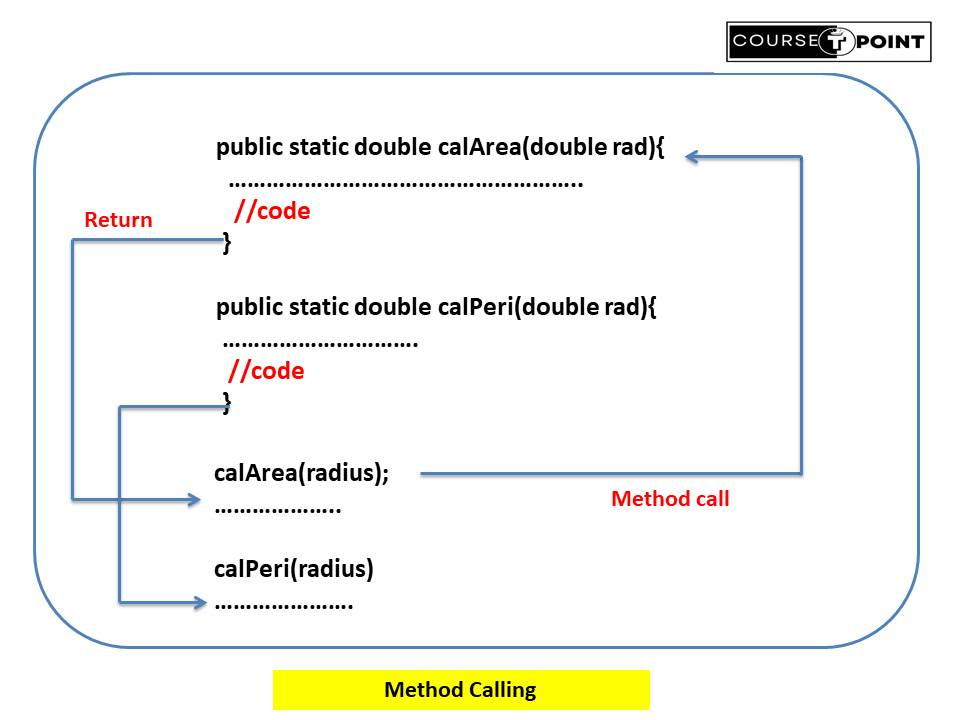

Methods in Java
| Table Of Content |
|---|
Methods in Java
Methods are block of statement or code that perform specific task. Methods are used to perform certain
actions, and they are also known as functions.
- Java Methods Help in code Reusability when we create a Method we can use many time in the package and outside the package.
- Java Method help to time savers and help us to reuse the code without retyping the code.
- Set of code perform specific task.
< access_modifier > < return_type > < Method_Name> ( parameter list){
............
............
body
}
Declaration Method in Java
A class with only object field has no life. Method that are necessary for manipulating the
data contained in the class. Methods are declare inside the body of the class but immediately after the
Declaration of instance variable.
Method declaration have six basic parts:
- Modifier(optional): It define the access type of method.
- default
- public
- private
- protected
- Return type : The datatype required to return the value and void type that does not return any value.
- Method Name : Method name is most important in declaration, unique name that is used to define the name of a method.
- Parameter List(Optional) : List of data that seperated by comma and enclosed by parentheses. If there is no parameter ,that represent by empty parentheses().
- Exception List(Optional) : Sometime you can expect the method throw an error that specified expection(e).
- Method Body(Optional): It can perform specific task that we are assign it. It is enclosed within the pair of curly braces.
Types of Method
There are two types of method in java.
- Predefine Method : As the name suggest method are define in java class labraries are called predefine methods. We can directly use these methods just by calling them in the program at any point. Let consider an example we find square of a number that in java libraries predefine method name sqrt() are used.
- length()
- charAt(int index)
- substring(int beginIndex, int endIndex)
- toUpperCase()
- toLowerCase()
- indexOf(String str)
- abs(int a)
- max(int a, int b)
- min(int a, int b)
- sqrt(double a)
- pow(double a, double b)
- length
- clone()
- sort()
- toString()
- exists()
- isFile()
- isDirectory()
- listFiles()
- nextInt()
- nextDouble()
- nextLine()
- hasNext()
- UserDefine Method : The methods are written by developer or programmer to perform specific task that are called user define Methods.
- Static Method : Static Method are accessed through the class itself. Static
method declare usind
staticKeyword. - Instance Method : Instance Method are accessed through object of the class. Instance method are declare without using static Method.
// program to demonstrate predefine methods in java
public class DemoMethod {
public static void main(String[] args) {
// Define a variable to hold the number
double number = 256;
// Calculate the square root using Math.sqrt() method and print result
System.out.println("Square root of " + number + " is: " + Math.sqrt(number));
}
}
Output : Square root of 256.0 is: 16.0
Here are some commonly used predefined methods in Java:
| Methods | Description |
|---|---|
| String Methods: |
|
| Math Methods: |
|
| Array Methods: |
|
| File Methods: |
|
| Scanner Methods: |
|
Way to create User Define Method
There are Two way to create user define methods:
import java.util.Scanner;
// program to demonstrate Userdefine methods in java
public class DemoMethod {
//static method
public static void evenOdd(int n){
if(n%2==0)
System.out.println("even");
else
System.out.println("odd");
}
//instance method
public void show(){
System.out.println("Instance Method");
}
public static void main(String[] args) {
Scanner sc = new Scanner(System.in);
System.out.println("Enter Number : ");
int num = sc.nextInt();
evenOdd(num);
//Creating an object of the class
DemoMethod obj = new DemoMethod();
//invoke instance method
obj.show();
}
}
Output:
Enter Number :
6
even
Instance Method
Naming of Methods
Method names should be descriptive and follow the conventions of camelCase, starting with a lowercase letter.
- While define method, remember that the method name should be a verb and start with lowercase letter.
- If the method name has more than two words, the first name should be verb followed by an noun or adjective.
- In Multiwords method name, first letter of the first word is lowercase and secord word with uppercase. such as : addNum, checkPrime, findSum etc.
Method Calling
Method calling in Java refers to invoking a method to execute its code. Know lets suppose you create a program that calculate area and perimeter of circle you create two methods:
- calArea()
- calPeri()
In the above example, we have declared a two method named calArea() and CalPeri() . Now, to use the method, we need to call it.
Here's is how we can call the calArea() and calPeri() method.
import java.util.Scanner;
class Circle{
public static double calArea(double rad){ //static method declaration
double area = Math.PI * Math.pow(rad, 2);
return area;
}
public static double calPeri(double rad){ //static method declaration
double peri = 2*Math.PI *rad;
return peri;
}
public static void main(String [] args ){
double radius;
Scanner sc = new Scanner(System.in);
System.out.println("Input the Radius of a circle : ");
radius = sc.nextDouble();
double area = calArea(radius); // calArea() Method call
System.out.println("Area of a circle : " + area);
double perimeter = calPeri(radius); // calPeri Method call
System.out.println("Perimeter of a circle : " + perimeter);
}
}
Output:
Input the Radius of a circle : 3.2
Area of a circle : 32.169908772759484
Perimeter of a circle : 20.106192982974676
In the above program methods calArea() and calperi() are called and return the area and perimeter of a circle.
- Method return type: A Java method may or may not return a value to the function call. We use the return statement to return any value.
- Method parameter: A method parameter is a value accepted by the method. As mentioned earlier, a method can also have any number of parameters.